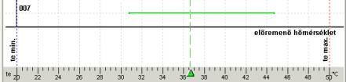

8.3.6. A megfelelõ te/qz-k grafikonja, és a grafikon alapján történõ méretezés

Vízszintesen a grafikonon az elérhetõ elõremenõ hõmérsékletek vannak. A görbe skálája az adott szabályozási kör te/qe min és te/qe max értékétõl függ (ezek a körök adataiban vannak megadva a terv opcióinál). A függõleges tengelyen az ehhez a szabályozási körhöz tartozó helyiségek találhatók.
A vízszintes tengelyen háromszög alakú csúszkával jelölt, függõleges, szaggatott, zöld vonal mutatja az elõremenõ hõmérséklet aktuális beállítását. A te/qe megváltoztatásához fel lehet használni a „Kijelöl” nyomógomb mellett levõ számmezõt, vagy az egérrel meg lehet fogni a csúszkát vagy a vonalat, és elhúzni balra vagy jobbra.
A görbe lényegét a program által meghatározott, az egyes helyiségeknek megfelelõ, elõremenõ hõmérsékleti tartományok jelentik. Megfelelõ te/qe-n az a hõmérséklet értendõ, amely lehetõvé teszi az ebben a helyiségben elhelyezett FF-ekbõl azzal a hõszükséglettel megegyezõ teljesítményt, amit a padlófûtésnek kell fedezni. Ezeket a tartományokat az adott helyiségek nevének magasságában elhelyezett vízszintes vonalak ábrázolják:

A vízszintes, zöld vonal a fenti rajzon azt jelenti, hogy a „Szoba” helyiségben el lehet érni a padlófûtés teljesítményének pontosan a megkívánt értékét, ha a hõmérséklet a kb. 39,5°C és 52,5°C közötti tartományba esik.
A helyiséghez megfelelõ te/qe-k vonala zöld színû, ha ezt a te/qe aktuális beállítását jelentõ függõleges, szaggatott vonal metszi. A kék vonal azt jelzi, hogy a te/qe túl alacsony, a piros pedig, hogy túl magas. Ezt úgy is fel lehet fogni, mint a helyiség várható alul illetve túlfûtöttségét, azonban a gyakorlatban elõfordulhat, hogy a piros vonallal jelzett helyiség (várható túlfûtöttség), teljesítmény hiányt mutat, mivel a kis csõkiosztású változatokat a program eldobhatja, a padlófelület hõmérsékletére (tff/qff) vonatkozó szabvány túllépése miatt.
! A program által a grafikonon megjelenített megfelelõ te/qe-k tartománya a gyakorlatban lehet nem folyamatos is, azaz felléphet olyan szituáció, hogy a meghatározott hõmérséklet a tartomány közepére esik, ennek ellenére azonban a méretezési eredményekben a helyiség teljesítmény hiányt vagy többletet mutat ki. Ez a helyzet különösen akkor valószínû, ha közegnek kis kihûlési tartománya megengedett a körben (pl. Dt/Dq max 10, az Dt/Dq min pedig 6). Azonban a teljesítmény többlet vagy hiány ilyen esetben nem túl nagy.
Elõfordulhat, hogy egyáltalán nem lehet a padlófûtés kívánt teljesítményét elérni (pl. akkor, amikor a m2-re esõ, megkívánt teljesítmény túl nagy), tehát a kívánt teljesítmény elérését lehetõvé tevõ te/qe tartomány üres – ekkor megjelenik a „Nincs megfelelõ te/qe” üzenet. Ezt egy balra irányuló, piros, vagy jobbra mutató kék nyíl kíséri. A nyíl fajtája a megfelelõ te tartomány hiányára utal:
– azt jelenti, hogy minden rendelkezésre álló te/qe a helyiség alulfûtöttségét eredményezi. Az ilyen helyzetnek a leggyakoribb oka, hogy túl nagy az FF effektív felületének egy m2-re hõigény – a padlófelület hõmérsékletének korlátozása miatt a m2–re esõ maximális teljesítmény kb.100 W. Itt nem szabad elfelejteni, hogy a max. tff/qff pontokban van ellenõrizve, nem pedig mint átlagérték, tehát a különbözõ esetekben az átlagos határteljesítmény jelentõsen eltérhet az elméleti 100 W értéktõl.
–az ellenkezõ helyzetet jelenti – minden rendelkezésre álló te/qe a helyiség túlfûtöttségét eredményezi, azaz az FF-bõl a megkívántnál nagyobb teljesítmény elérését (nem pedig a maximális tff/qff túllépését!). Az ilyen helyzet gyakori az épület belsejében található helyiségeknél, amelyeknek nagyon kicsi a hõvesztesége.
A grafikon ablakának alján a következõ nyomógombok találhatók:
„Kijelölés”
Az elõremenõ hõmérséklet optimalizálása. Ennek hasonló a mûködése az ugyanilyen nevû nyomógombhoz az adott szabályozási kör eszközsávján – az optimális elõremenõ hõmérséklet meghatározását eredményezi.
„Elfogad”
A grafikonon aktuálisan beállított hõmérséklet elfogadását eredményezi, függetlenül attól, hogy az a „Kijelölés” funkcióval vagy kézzel lett beállítva. A program bezárja a grafikont tartalmazó ablakot, az „Elõremenõ hõm.” mezõben pedig az adott szabályozási kör sávjában megjelenik a grafikonon beállított érték.
„Töröl”
A grafikonon vagy a számmezõben beállított változások törlését eredményezi, és bezárja a grafikon ablakát. Az elõremenõ hõmérséklet olyan marad, mint amilyen a grafikon megnyitása elõtt volt.
A grafikon a várható méretezési eredményekre vonatkozó információk kitûnõ forrása. Lehetõvé teszi, hogy a részletes eredmények analízise nélkül meghatározzuk, mely helyiségek érik el a kívánt teljesítményt, melyek nem. Ennek köszönhetõen azonnal vissza lehet térni az adatok szerkesztéséhez, majd újra analizálni a grafikont, ellenõrizni, hogy az adatok módosítása meghozta –e a kívánt eredményt.
Gyakorlatilag a helyiség és a benne levõ FF-ek minden, a méretezésben figyelembe vett paramétere befolyásolja a megfelelõ te/qe hõmérsékletek grafikonját, tehát a grafikonon az adott helyiségnek megfelelõ vonal hosszát és helyét. A fontosabbak közé tartoznak:
- egyrészt a helyiségben levõ FF-ek effektív területébõl, másrészt a Qff/Fff értékébõl következõ megkívánt teljesítmény W/ m2-ben,
- A padlóburkolat fajtája (hõellenállása),
- a megengedett hõmérsékletek tartománya (Dt/Dq – a közeg kihûlése a fûtõkörben),
- a lehetséges csõkiosztások,
- a peremzóna megléte és fajtája,
- a bekötések által elfoglalt terület, és a bekötések figyelembe vételének módja.
A fenti paraméterekkel történõ manipulálás befolyásolja a megfelelõ te/qe-k tartományát, ennek következtében pedig a megadott elõremenõ hõmérséklethez tartozó méretezési eredményeket.
A grafikon másik alkalmazási lehetõsége a te/qe maximálásának vagy minimalizálásának lehetõsége. A grafikonnak köszönhetõen látható, hogy mely helyiségekrõl „mondunk le” (azaz a túl- vagy alulfûtésük mellett döntünk) pl. az elõremenõ hõmérséklet csökkentésével, vagy ellenkezõleg – mennyire tudjuk csökkenteni a te/qe-t úgy, hogy nem „mondunk le” egyik helyiségrõl sem.
Minden hõmérsékletre a temin/qe min és temax/qe max tartományból a program végrehajtja az optimalizálást, és megrajzolja a hõmérséklet minõségek grafikonját. Az elõremenõ hõmérséklet optimalizálásának grafikonján megjelenik a hõmérséklet minõséget jelölõ vonal. A minõségi grafikon elrejtéséhez vagy megjelenítéséhez ki kell jelölni a met az ablak alsó részében, vagy meg kell szüntetni annak kijelölését.